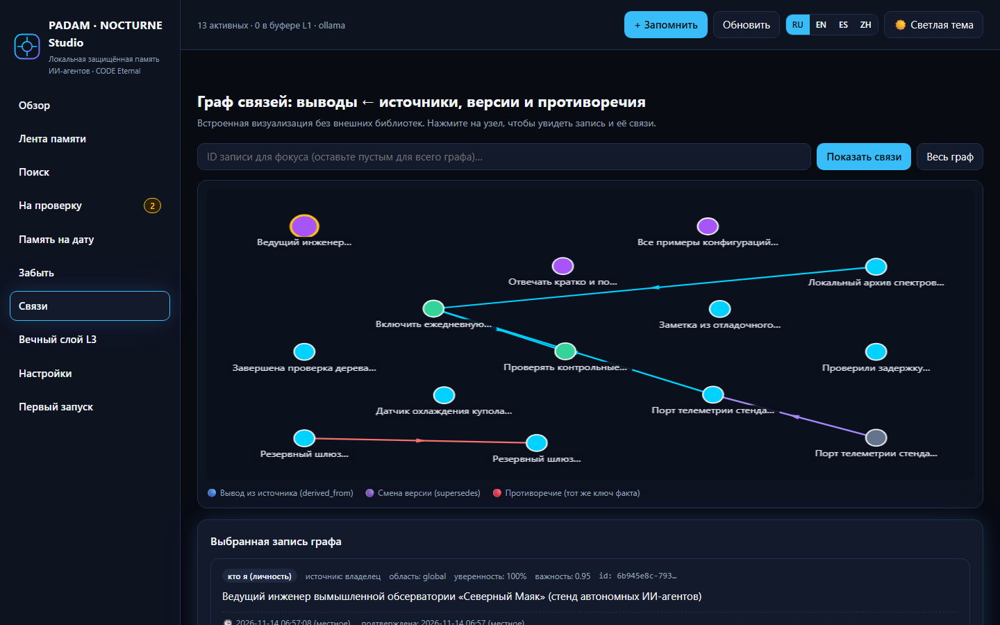

$0 per write, 0 cloud calls
Built-in hybrid search combines BM25, exact identifiers, and local vectors without paid APIs or network traffic.
A three-tier local-first memory stored in a single SQLite file: masks API keys and Solana wallets before disk, holds prompt injections for owner review, splits retrieval clock from confirmation clock, and proves single-record deletion via per-record AES-256-GCM key destruction.
Built-in hybrid search combines BM25, exact identifiers, and local vectors without paid APIs or network traffic.
LongMemEval-S (470 answerable): 97.0% any@5, 99.2% any@10, 93.0% all@10. LoCoMo (10 chats, 1,536 answerable): 90.1% sess_any@5 (91.1% with PADAM_RERANK=1), 95.5% sess_any@10 (95.8%).
20+ secret formats, Solana keypairs/seeds (with readable public address) and Luhn cards are redacted before SQLite.
Each record uses its own AES-256-GCM key. Forgetting wipes the key forever and exports a JSON/HTML receipt.
Current dialogue and raw episodes queued via padam log without polluting verified long-term facts.
7 record kinds, two independent clocks (last_seen_at vs last_confirmed_at), full version history, review queue, and hybrid search.
Optional layer: encrypted Arweave bundles (Turbo), Solana Memo Merkle roots, and Bitcoin OpenTimestamps.
| Records | Write | Search | SQLite size |
|---|---|---|---|
| 1,000 records | 2.7 ms / write | 5.4 ms (p95: 6.9 ms) | 4.7 MB |
| 10,000 records | 3.5 ms / write | 22.1 ms (p95: 25.2 ms) | 45.2 MB |
| 100,000 records | 5.1 ms / write | 145 ms (p95: 160 ms) | 375.2 MB |

